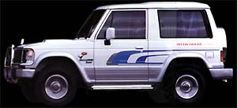

|
 |
Пассажировместимость: 5 чел.
Цена: 20,795 - 21,795 USD
- кондиционер воздуха;
- брызговики передние, задние;
- противотуманные фары;
- дополнительные измерительные приборы:
- температура воздуха в салоне и окружающей среды;
- уровень наклона к горизонту;
- высота над уровнем моря;
- автоматическое включение полного привода;
- аудиосистема I класса;
- электропривод стеклоподъемников;
- "центральный замок";
- защитная дуга (малая);
- диски из легких сплавов;
- шины 235/75 R15;
- подножки задние / боковые;
- подготовка пуска двигателя в холодное время года;
- двойная окраска кузова
|